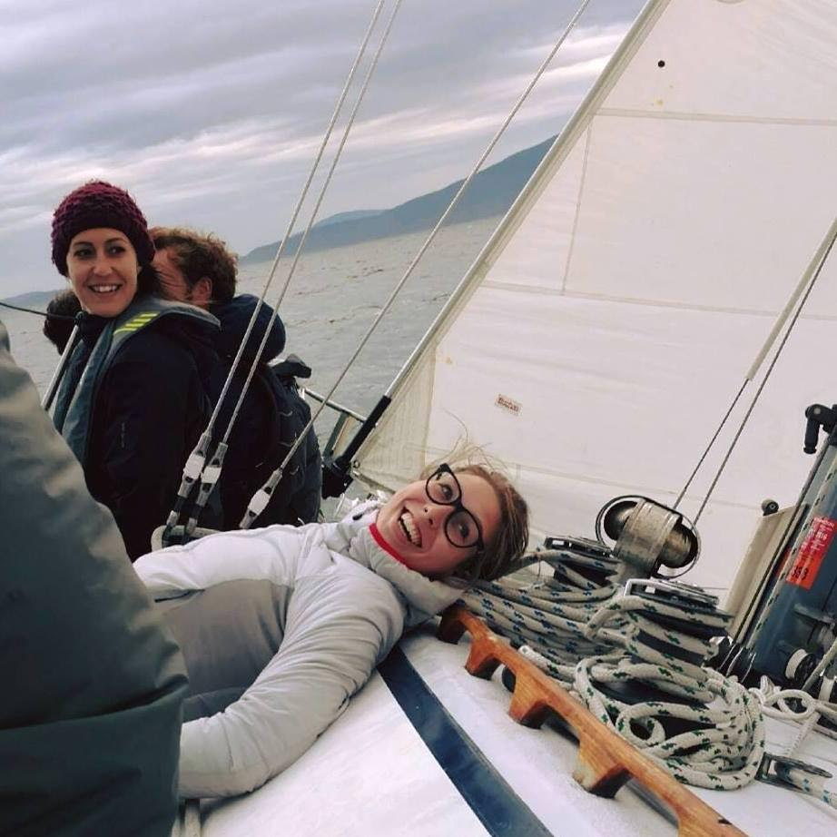

<div class="col-md-3" id="about-me">
  <!--start of about me sidebar-->
<div class="sidebar">
  <h2>Hannah Kinne</h2>
  <h3>About Me</h3>
  
  <p>
    <span class="intro-words">Hannah Kinne here</span> born and raised in the Pacific North West. Graduated Cum Laude at Western Washington University in 2015 with bachelor degrees in both Spanish and Linguistics. I recently moved from the beautiful Bellingham Bay to Portland in order to hone my language skills in a new way- computer programming.
  </p>
  <p>
    <span class="intro-words">In my free time</span> you can find me away from a computer, biking and running around or at cooking up something tasty.
  </p>
    <a class="github-button" href="https://github.com/ntkme" data-style="mega" data-count-href="/ntkme/followers" data-count-api="/users/ntkme#followers" data-count-aria-label="# followers on GitHub" aria-label="Follow @ntkme on GitHub">Follow @hannah-k</a>
</div>
